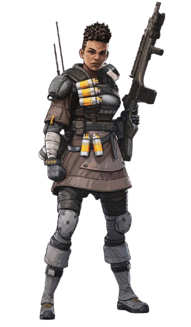
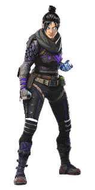
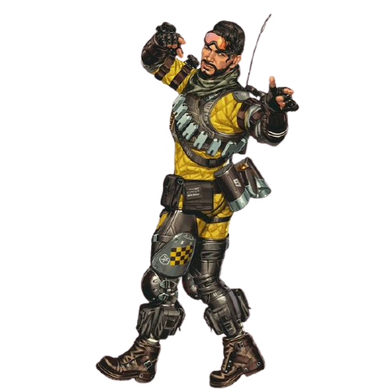
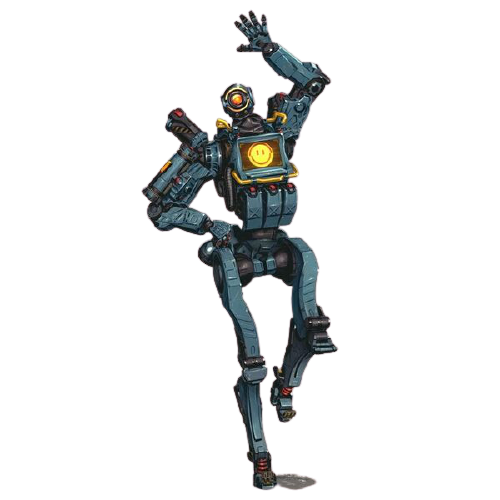

Bangalore
(Professional Soldier)
Born into a military family where she, her parents, and
her four older brothers all served with the IMC, Bangalore has been an
exceptional soldier her whole life. Dedicated to the IMC cause, she was top of her class at the IMC Military Academy and the only cadet who could take apart a Peacekeeper,
equip it with a Precision Choke hop-up, and put it back together in under twenty seconds – blindfolded.
| Real Name |
Anita Williams |
| Age |
38 |
| Home Planet |
Gridiron |

Wraith
(Interdimensional Skirmisher)
Wraith is a whirlwind fighter, able to execute deadly attacks and manipulate spacetime by opening rifts in the fabric of reality — but those abilities came at a price. Years ago, she woke up in an IMC detention facility with no memory of who she was. Senior Science Pilot Renee Blasey, who volunteered as guinea pig for her own experiments... whose partner betrayed her and locked her away… no longer existed.
| Real Name |
Renee Blasey |
| Age |
32 |
| Home Planet |
Typhon |

Mirage
(Holographic Trickster)
Mirage is the kind of guy who likes to stand out. The youngest of four brothers, he perfected the art of fooling around to get attention. The one thing he took seriously was Holo-Pilot technology: introduced to the illusion-creating tech by his engineer mother, he poured over the mechanisms and learned all he could about them.
| Real Name |
Elliott Witt |
| Age |
30 |
| Home Planet |
Solace |

Pathfinder(Forward Scout)
Pathfinder is the picture of optimism, despite his circumstances. A MRVN (Mobile Robotic Versatile eNtity) modified to specialize in location scouting and surveying, he booted up decades ago in an abandoned warehouse with no idea who created him or why. With only his MRVN designation to hint at his identity, Pathfinder eventually set off in search of his creator.
| Real Name |
MRVN |
| Age |
He really wants to know, too. |
| Home Planet |
He’s trying to find out! |